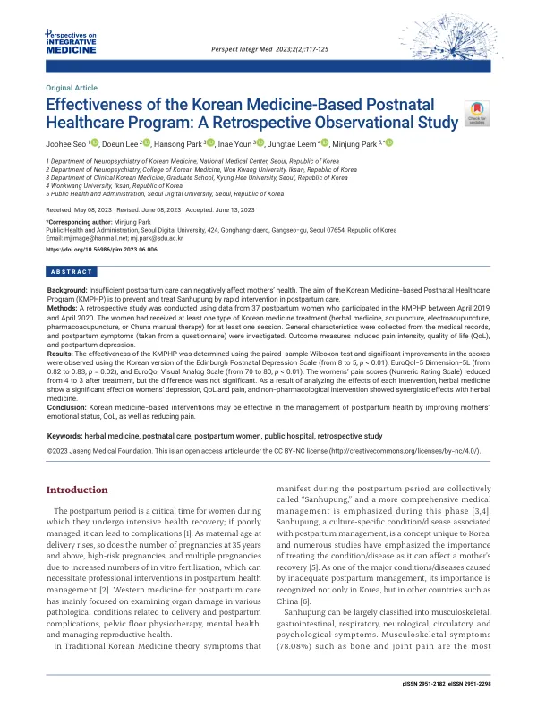

Effectiveness of the Korean Medicine-Based Postnatal Healthcare Program: A Retrospective Observational Study
Seo J, Lee D, Park H, Youn I, Leem J, Park M
Perspectives on Integrative Medicine 2(2):117-125

첫 장 · 오픈액세스First page · open access
논문 소개Summary
국립중앙의료원의 한의 산후 건강관리 프로그램이 어떤 결과를 냈는지 후향적으로 살핀 관찰연구입니다. 2019년 4월부터 이듬해 4월까지 참여해 한약이나 침, 전침, 약침, 추나 가운데 하나 이상을 받은 산모 37명의 기록을 검토했습니다. 한국판 에든버러 산후우울척도가 8점에서 5점으로, 유로퀄 5차원 5수준이 0.82에서 0.83으로, 시각아날로그척도가 70에서 80으로 유의하게 좋아졌습니다. 반면 통증 숫자평가척도는 4점에서 3점으로 낮아졌으나 유의하지 않았습니다. 저자들은 표본이 적어 개별 증상과 개별 중재를 연결해 보지 못했고 환자마다 복합 치료를 받았다는 점, 동반질환과 영아 평가를 보고하지 못한 점을 한계로 들었습니다.
A retrospective observational study of what the Korean medicine-based postnatal healthcare programme at the National Medical Center achieved. Records were reviewed for 37 postpartum women who took part between April 2019 and April 2020 and received at least one session of herbal medicine, acupuncture, electroacupuncture, pharmacopuncture or Chuna manual therapy. The Korean Edinburgh Postnatal Depression Scale improved significantly from 8 to 5, the EuroQol-5D-5L from 0.82 to 0.83, and the EuroQol visual analogue scale from 70 to 80. Pain on the Numeric Rating Scale fell from 4 to 3, but not significantly. The authors note as limitations that the small sample prevented linking individual symptoms to individual interventions, that patients received complex combinations of treatment, and that comorbidities and infant assessments were not reported.
인용Cite
Seo J, Lee D, Park H, Youn I, Leem J, Park M. Effectiveness of the Korean Medicine-Based Postnatal Healthcare Program: A Retrospective Observational Study. Perspectives on Integrative Medicine. 2023;2(2):117-125. doi:10.56986/pim.2023.06.006